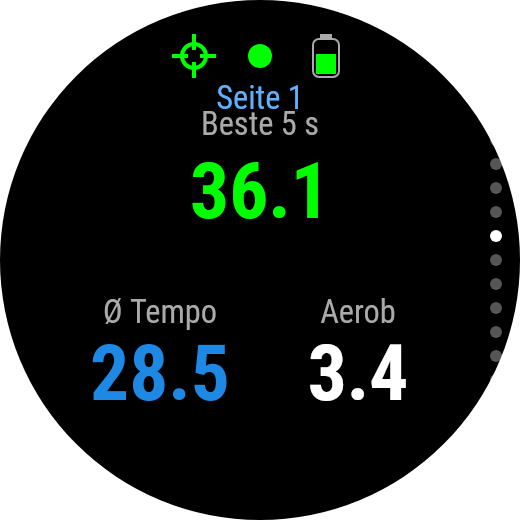

Auswahl mit blauem Rahmen, Nachbarn grau.

Beide Sportarten stehen immer zur Wahl.
Bedienungsanleitung · Garmin Connect IQ · Windsurfen und Wingen
SurfsApp zeichnet Windsurf- und Wingfoil-Sessions auf und zeigt dabei Geschwindigkeit, Herzfrequenz, Strecke und sportartspezifische Kennzahlen. Die Aufnahme wird als Aktivität in Garmin Connect gespeichert. Die App erkennt Gleiten, Halsen und Wenden, beim Windsurfen zusätzlich Wellenritte und Loops.
Die Darstellungen in dieser Anleitung sind schematisch. Die Zahlenwerte sind Beispiele.
| Bedienelement | Funktion |
|---|---|
| START/STOP | Auswählen, bestätigen, Aufnahme starten. Während der Aufnahme: Aktionsmenü öffnen. |
| HOCH / RUNTER | In Listen auswählen, Werte ändern, während der Aufnahme Seiten blättern. |
| HOCH lang gedrückt | Einstellungen öffnen, auch während der Aufnahme. Auf der Loop-Seite öffnet es direkt „Letzte Sprünge“. |
| BACK | Eine Ebene zurück. Auf der Startseite beendet es die App. Während der Aufnahme setzt es einen Marker. |
| Touchscreen | Wird nicht ausgewertet. Wassertropfen lösen nichts aus. |
| Bedienelement | Funktion |
|---|---|
| Obere Taste | Auswählen, bestätigen, Aufnahme starten. Während der Aufnahme: Aktionsmenü öffnen. |
| Untere Taste | Eine Ebene zurück, auf der Startseite App beenden. Während der Aufnahme: Marker setzen. |
| Wischen nach oben / unten | Blättern in Listen und Seiten, auch während der Aufnahme. |
| Wischen nach links / rechts | Seiten blättern, nur während der Aufnahme und in der Pause (links = weiter, rechts = zurück). |
| Tippen | Ohne Funktion. Ausgewählt wird immer mit der oberen Taste. |
| Langer Druck auf den Bildschirm | Ohne Funktion. Die Einstellungen stehen als eigener Eintrag „Einstellungen“ auf der Startseite und im Aktionsmenü. |
Während einer laufenden Aufnahme ist der Bildschirm gesperrt, nur Wischen zum Blättern der Seiten ist möglich. In der Sportwahl, in der Vorschau und in einer manuell gesetzten Pause ist er frei.
Ein blauer Rahmen markiert den gewählten Eintrag. Blaue Pfeile zeigen an, dass die Liste in diese Richtung weitergeht. Eine Liste läuft im Kreis: Nach dem letzten Eintrag folgt wieder der erste.
Mit HOCH und RUNTER wählen Sie die Sportart Windsurfen oder Wingen. Steht eine gespeicherte Session bereit, erscheint zusätzlich „Letzte Session“. Auf der vívoactive 4 folgt außerdem „Einstellungen“.
Zeichnet die Uhr nur begrenzt Daten auf, weil der Speicher knapp ist, erscheint in der Vorschau kurz ein Hinweis zur möglichen Aufnahmedauer. Eine Taste schließt ihn.
START/STOP öffnet während der Aufnahme das Aktionsmenü:
Jede Aktion verlangt eine Bestätigung mit „Ja“ oder „Nein“. HOCH und RUNTER wechseln die Auswahl, START bestätigt. Bei „Speichern“ und „Verwerfen“ steht „Nein“ vorgewählt.
Die Pause kann von Hand oder automatisch ausgelöst werden (Einstellung „Pause“). Bei „Automatic“ hält die Aufnahme an, wenn die Geschwindigkeit längere Zeit unter dem Pausenwert liegt, und läuft weiter, sobald die Fahrt-ab-Geschwindigkeit überschritten wird. Auf der Hauptseite zeigt „AUTO“ eine automatische Pause an, bei manueller Pause das Pausezeichen.
BACK setzt während der Aufnahme einen Marker. Die Uhr vibriert dreimal kurz. Zwei Marker müssen mindestens zwei Sekunden auseinander liegen. In der Pause setzt BACK keinen Marker. Mehr dazu in Abschnitt 9.
HOCH und RUNTER blättern durch die Seiten, die Punkte am rechten Rand zeigen die Position. Die Reihenfolge ist: Hauptseite, Maxima, Wellen (beim Wingen Downwinds), eigene Seiten, Loop-Seite, Kompass. Beim Windsurfen steht die Loop-Seite nur zur Verfügung, wenn Loop nicht auf „Aus“ steht. In der Vorschau folgt nach dem Kompass die Seite „Summe“ mit den Summen über alle gespeicherten Sessions.


Sie können bis zu vier eigene Seiten mit frei belegbaren Zellen anlegen. Die festen Seiten bleiben unverändert. Eigene Seiten erkennen Sie am blauen Seitenpunkt.





In der Belegung wird die Seite selbst als Auswahl gezeigt. Der Rahmen springt von Zelle zu Zelle, START öffnet die Liste der Datenfelder (siehe Abschnitt 11).


Die Einstellungen öffnen Sie mit HOCH lang (fēnix) bzw. über den Eintrag „Einstellungen“ (vívoactive 4). Sie sind auch während der Aufnahme erreichbar. Mit START öffnen Sie einen Eintrag, mit BACK gehen Sie eine Ebene zurück. Beim Verlassen des Hauptmenüs übernimmt die Uhr die Änderungen. Die Werte lassen sich auch in der Garmin-Connect-IQ-App auf dem Smartphone einstellen.


Zahlenwerte ändern Sie mit HOCH und RUNTER und bestätigen mit START. BACK verwirft die Änderung.
| Menü | Eintrag | Bedeutung und Werte |
|---|---|---|
| Hauptmenü | Pause | Manuell oder Automatic (Werkseinstellung: Automatic). |
| Fahren | Fahrt ab | Geschwindigkeit, ab der die Fahrt beginnt und eine automatische Pause endet. 1 bis 30 km/h in Schritten von 0,5 (Werkseinstellung 5,5). |
| Gleitschwelle | Geschwindigkeit, ab der die Fahrt als Gleiten zählt. 1 bis 80 km/h in Schritten von 0,5 (Werkseinstellung 11). | |
| Pause unter | Nur bei Automatic. Liegt die Geschwindigkeit länger als „Pause nach“ darunter, pausiert die Aufnahme. 0 bis 20 km/h in Schritten von 0,5 (Werkseinstellung 5). | |
| Pause nach | Nur bei Automatic. Dauer in Sekunden, 5 bis 300 in Schritten von 5 (Werkseinstellung 20). | |
| Modus | Loop | Untermenü mit den Einträgen Stellung und G Landung. Siehe Abschnitt 9. |
| G Landung | Empfindlichkeit der Landungserkennung nach einem Sprung. „Auto“ stellt sie selbst ein, sonst 2 bis 40 g. Nur sichtbar, wenn Loop nicht auf „Aus“ steht. | |
| Wellenritt | Standard, Optimiert oder Visu, siehe Abschnitt 9. „Optimiert“ und „Visu“ erhöhen den Akkuverbrauch. | |
| Wingen | Schaltet die Datenaufzeichnung für die Wingen-Auswertung ein oder aus. | |
| Anzeige | Eigene 1 bis 4 | Eigene Seiten einrichten, siehe Abschnitt 6. |
| Hauptmenü | Letzte Sprünge | Liste der erkannten Sprünge mit Drehung. Nur sichtbar, wenn Loop nicht auf „Aus“ steht. |
| System | Sprache | Auto, Deutsch oder English. |
| Connect-Felder | Auswahl der Werte, die als eigene Felder in die Aktivität in Garmin Connect geschrieben werden, siehe Abschnitt 8. | |
| Debug-Protokoll | Schreibt zusätzliche Diagnosedaten. Nur zur Fehlersuche einschalten. |
Die App berechnet alle Kennzahlen immer. Unter System → Connect-Felder legen Sie fest, welche Werte zusätzlich als eigene Felder in der Aktivität in Garmin Connect erscheinen. Abgewählte Felder werden nur nicht angelegt und lassen sich jederzeit wieder einschalten. Garmin begrenzt eine Aktivität auf höchstens 16 Felder, und alle Texte zusammen dürfen höchstens 32 Zeichen lang sein. Einige Felder sind immer aktiv und nicht wählbar (zum Beispiel die Marker).
| Feld | Einheit |
|---|---|
| Halsen | – |
| Vmax Zeit | – |
| Wellenritte | – |
| Bester Ritt | – |
| Durchgleitq. | % |
| GPS-Ausreißer | s |
| Feld | Einheit |
|---|---|
| Wellen-Diagramm | km/h |
| Wellen/Runde | – |
| Beste 2 s | km/h |
| Bester Ritt/Rd. | km/h |
| Beste 10 s | km/h |
| Alpha 250 | km/h |
| Beste 500 m | km/h |
| Beste 100 m | km/h |
| Gleiten % | % |
| Gleitzeit | min |
| Ritt Strecke | m |
| Ritt Max | km/h |
| Beste 1 NM | km/h |
| Wenden | – |
| Treiben % | % |
| Dümpeln % | % |
| Gleitstrecke | km |
| Treibzeit | min |
| Dümpelzeit | min |
| Beste 250 m | km/h |
| Treibstrecke | km |
| Dümpelstrecke | km |
Beim Windsurfen erkennt die App Wellenritte automatisch aus Kurs und Geschwindigkeit. Sie müssen nichts auslösen. Die Seite „Wellen“ zeigt den letzten Ritt mit Bottom Turn und Cutback, die Auswertung nach der Session listet alle Ritte und hebt den besten hervor. Mit dem Schalter „Wellenritt“ unter Einstellungen → Modus wählen Sie, wie genau gemessen wird: „Standard“ spart Akku, „Optimiert“ erkennt Manöver genauer und braucht mehr Akku. „Visu“ speichert zusätzlich Daten für die Web-Auswertung.
Die App erkennt Loops automatisch und zählt sie. Die Anzahl steht auf der Loop-Seite, die letzten Sprünge öffnen Sie unter „Letzte Sprünge“. Der Schalter „Loop“ unter Einstellungen → Modus hat vier Stellungen:
| Stellung | Wirkung |
|---|---|
| Aus | Loops werden nicht erkannt. |
| Ein Connect | Loops werden gezählt und stehen in der Sprungliste der Uhr. Es werden keine zusätzlichen Daten gespeichert. |
| Lernen, Ein Visu | Wie „Ein Connect“, zusätzlich speichert die App Daten für die Auswertung am Computer. |
Die Liste der letzten Sprünge öffnen Sie im Hauptmenü unter „Letzte Sprünge“, im Aktionsmenü unter „Sprünge“ oder mit HOCH lang auf der Loop-Seite.
Mit BACK setzen Sie während der Aufnahme einen Marker, zum Beispiel nach einem besonderen Sprung, einer Welle oder einem Spot-Wechsel. Die Uhr bestätigt mit einer kurzen Vibration. Zwei Marker müssen mindestens zwei Sekunden auseinander liegen. Die Marker werden mit der Aktivität gespeichert, sodass Sie die Stelle bei der Auswertung wiederfinden. Auf der Hauptseite erscheint der Marker kurz mit seiner Nummer.
Nach dem Speichern zeigt die Uhr die Auswertung. HOCH und RUNTER blättern durch die Seiten, BACK schließt sie. Die letzte Auswertung ist jederzeit über „Letzte Session“ auf der Startseite erreichbar. Die Seiten zeigen: Zeiten und Pausen, Tempo, beste Werte, Tempo getrennt nach Gleiten, Dümpeln und Treiben, Manöver, beim Windsurfen Wellenritte, den besten Ritt mit den besten Turns sowie die besten Distanzen.
Die Aufnahme liegt als FIT-Datei in Garmin Connect und lässt sich dort wie jede andere Aktivität ansehen.
Jede Zelle einer eigenen Seite kann eines dieser Datenfelder anzeigen:
SurfsApp ist kostenlos.